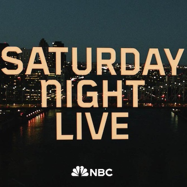

- 

Have you ever been scrolling through social media and stumbled upon something so funny you just had to share it with the world? That's exactly what happened to me with the SNL skit "Get That Boy Back."
One day, browsing Instagram, I came across a short clip of this music video. It had me laughing out loud instantly. I knew I had to find the full version, and after a quick YouTube search, I discovered the brilliance of the entire skit.
This video features a hilarious collaboration between the iconic SNL cast – Ego Nwodim, Chloe Fineman, and Chloe Troast and A-list guest stars:
award-winning actor Ryan Gosling and country music legend Chris Stapleton.
"Get That Boy Back" is more than just funny; it's a hilarious masterpiece. Here's what makes it so special:
I created this page because I want others to experience the same joy I did when I first saw this video. It's a reminder that laughter is the best medicine, and sometimes all you need is a good dose of SNL humor to brighten your day.